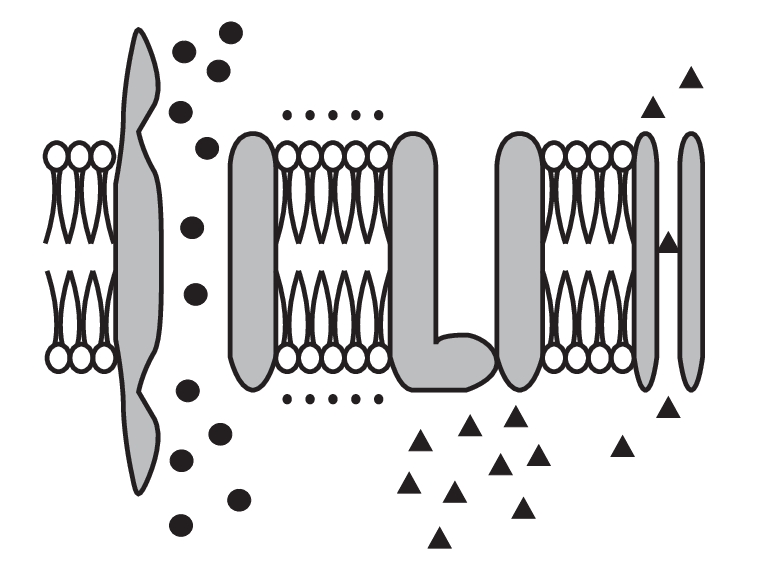
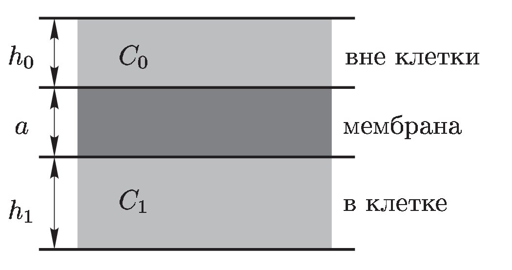
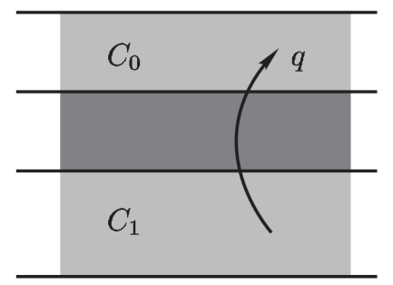
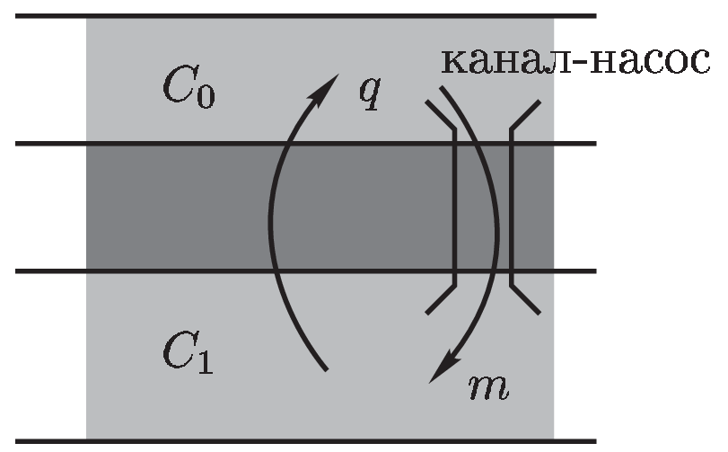
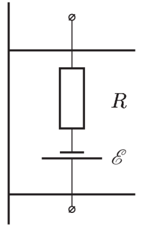

Y13 (2013) — English translation
A. Hodgkin and E. Huxley received the Nobel Prize in Physiology or Medicine in 1963 “for their discoveries concerning the ionic mechanisms involved in excitation and inhibition in the peripheral and central regions of the nerve cell membrane.” The basis of the life activity of living organisms is largely the processes occurring in cell membranes. In this task you need to consider some approaches to describing the process of excitation of nerve cells within the framework of a primitive model. The main idea of the theory of cell excitation is to describe the processes of ion transport through the membrane (Fig. 1). The permeability of the membrane is different for different ions; in addition, large protein molecules are built into the membrane, playing the role of pumps capable of transferring ions of a certain type from one side of the membrane to the other (expending energy on this). Due to the presence of these pump channels, ion concentrations are different on different sides of the membrane, and as a result, an electrical potential difference appears between the opposite walls of the membrane.

Let's simplify the model even more. We will assume that the membrane is a plane-parallel plate with thickness $a$ (Fig. 2). Outside the cell there is a layer of liquid (water) with a thickness of $h_0$, and the intracellular space is modeled by a layer of liquid with a thickness of $h_1$. The dielectric constants of all media will be considered equal to unity. We will denote the particle concentrations outside the cell as $C_0$, and inside as $C_1$ (if necessary, we will add indices indicating the type of particles).

Let's consider the movement of uncharged molecules through a membrane without “pumps” (we assume that electric charges do not exist in nature) (Fig. 3). The density of the diffusion flux of particles $q$ (the number of particles crossing a unit area of the membrane per unit time) is proportional to the difference in the concentrations of these particles on opposite sides of the membrane: \[q=g \Delta C,\]where $g$ is the proportionality coefficient, which we call the permeability of the membrane for these particles. Let at the initial moment of time the concentrations of the particles in question on different sides of the membrane be different.

Let us now consider a membrane in which pump channels are built in, forcibly transporting the molecules in question inside the cell. Let these channels be evenly distributed over the surface of the membrane, and per unit area there are $n$ channels, each of which transfers $m$ molecules from the extracellular space into the cell per unit time (Fig. 4).

We will further assume that the particles under consideration are potassium ions $\rm K^+$. Let the ion concentration outside the cell be $C_0$, and inside it $C_1$.
In the presence of an electric field, in addition to the ion flow through the membrane caused by the concentration difference, an ion flow appears due to the presence of the electric field. In this case, the total ion flux density through the membrane is determined by the formula \[q=g \Delta C+bC_i \Delta \varphi,\]where $\Delta \varphi$ is the potential difference between the walls of the membrane, $C_i$ is the concentration of ions on the side of the membrane from which the movement of ions through the membrane under the influence of an electric field begins (for positive ions on the side of higher potential).

As A. Hodgin and E. Huxley showed, to explain the occurrence of nerve impulses it is necessary to take into account at least two types of ions. The second main type of ions are $\rm Na^+$ ions. The membrane also contains sodium channel pumps that force sodium ions from the cell to the outside. We will assume that for both types of ions the parameters of the equivalent circuits $R_\textrm{K}$, $\mathcal{E}_\textrm{K}$, and $R_\textrm{Na}$, $\mathcal{E}_\textrm{Na}$, ($\mathcal{E}_\textrm{Na} > \mathcal{E}_\textrm{K}$) are known. Let all sodium channels be initially closed, and then at some point in time open for a short period of time $\tau$.
If you decided correctly, then the resulting graph will simulate the time course of a nerve impulse!
Source: https://pho.rs/p/3994